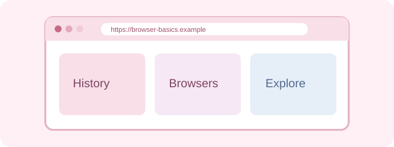

Browser History
A short timeline of important browsers and how the web developed.
Read more →IT 3203 • Student Research Project
From the earliest web pages to the browsers we use every day, explore how browsing the internet has changed over time.
Web browsers help us visit websites, watch videos, shop online, and learn new things. This website looks at where browsers started, how they have improved, and why they matter today.

A short timeline of important browsers and how the web developed.
Read more →Compare the browsers people use today.
Read more →Learn seven useful web browser terms.
Read more →See research sources and extra learning resources.
Read more →Meet the student behind this project.
Read more →Try a 10-question timed quiz and see what you learned about browsers.
Start quiz →